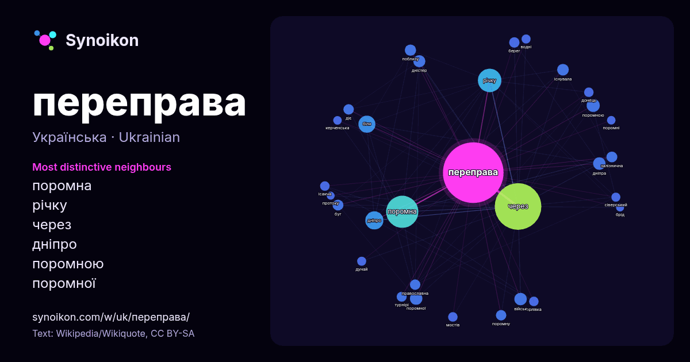

Українська · список слів дня
переправа
“crossing” · Слова довкола нього в 690 входженнях із Вікіпедії, Wikiquote.

Найхарактерніші сусіди
- поромна 114×
- річку 46×
- через 33×
- дніпро 31×
- поромною 20×
- поромної 18×
- дністер 16×
- дніпра 15×
- буг 13×
- існувала 13×
- поромну 13×
- біля 12×
- залізнична 12×
- православна 12×
- берег 11×
- орлівка 11×
- ісакча 11×
- донець 11×
- мостів 10×
- діє 10×
× = у скільки разів частіше, ніж у звичайному тексті Вікіпедії.
Найчастіші сусіди
- через 239
- поромна 114
- річку 61
- дніпро 36
- біля 32
- року 28
- поромною 19
- військ 17
- дніпра 17
- поромної 17
- дністер 16
- при 16
- існувала 15
- після 15
- поблизу 14
- році 14
- села 14
- буг 13
- залізнична 13
- міста 13
У контексті
- Поромна переправа Баку — Туркменбаші— залізнично-пасажирська переправа на Каспійському морі між містами Баку (Азербайджан) і Туркменбаші (колишній Красноводськ Wikipedia snippets · Поромна переправа Баку — Туркменбаші
- Поромна переправа Орлівка — Ісакча (переправа «Орлівка — Ісакча») — річкова поромна переправа через Дунай з міжнародним пунктом пропуску, що сполучає Wikipedia snippets · Поромна переправа Орлівка — Ісакча
- Керченська поромна переправа — морська поромна переправа, що з'єднувала Крим і Краснодарський край через Керченську протоку. Здійснювала перевезення пасажирів Wikipedia snippets · Керченська поромна переправа
- Соловйовська переправа (Соловйова переправа) — одна з п'яти переправ через Дніпро, якими здійснювалося сполучення з тилом, а потім виходили з оточення Wikipedia snippets · Соловйовська переправа
- Поромна переправа Бри́ндізі — Па́три — залізнична поромна переправа через Іонічне море, що з'єднує південь Італії з піостровом Пелопоннес в Греції, а Wikipedia snippets · Поромна переправа Бриндізі — Патри
- Переправа Корсака (рос. Переправа Корсака) — селище у Красноярському районі Астраханської області Російської Федерації. Населення становить 52 особи (2010) Wikipedia snippets · Переправа Корсака
- Поромна переправа «Євро́па — Близьки́й Схід» — залізнична поромна переправа від Пірея (Греція) до Латакії (Сирія) через Середземне море. Відстань 1,7 Wikipedia snippets · Поромна переправа «Європа — Близький Схід»
- Таванська переправа (Казикерменський перевіз, Бериславський чумацький тракт) — переправа через річку Дніпро, відома з часів, коли ці землі входили до Золотої Wikipedia snippets · Таванська переправа
Інші слова
Попередньо обчислено 2026-10-09 з типовими налаштуваннями (±5 слів, середній корпус). Інтерактивна карта може оновити дані наживо.
Інтерфейс перекладено машинно; виправлення вітаються.